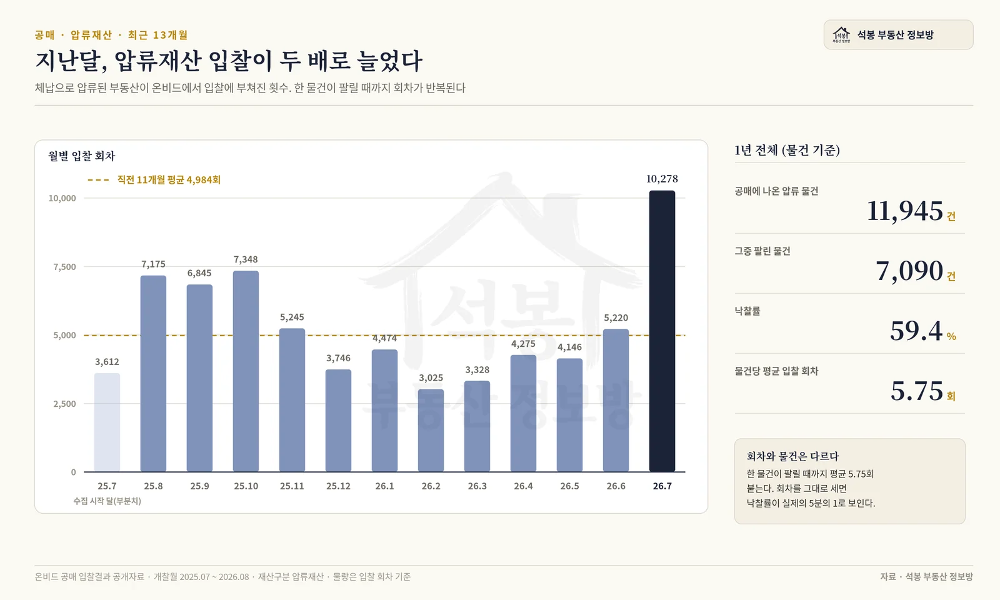
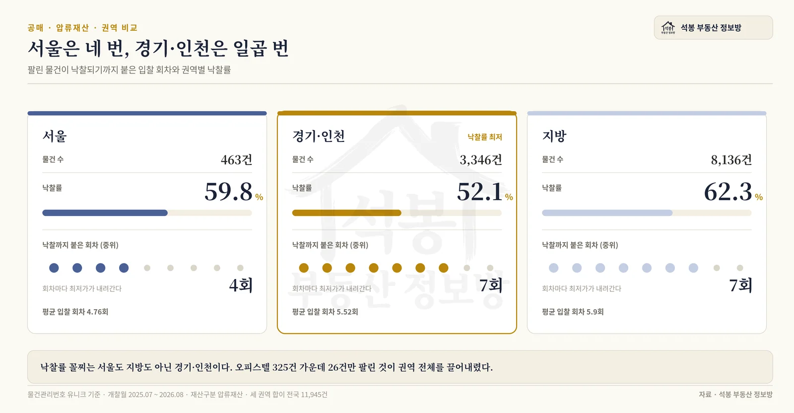
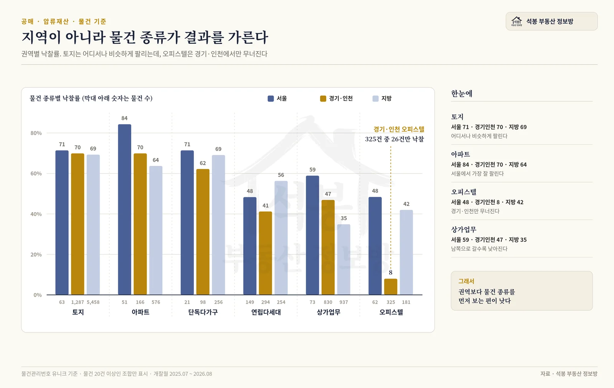

캠코가 이달 초 1조 65억원어치 압류재산 2,254건을 공매에 부쳤습니다. 매달 비슷한 규모의 공고가 나가고 기사도 같이 나갑니다. 그런데 기사는 늘 "얼마어치를 내놓았다"에서 끝납니다. 정작 그게 팔리기는 하는지, 어디 물건이 잘 나가고 어디가 안 나가는지는 아무도 세지 않습니다. 우리가 1년치 온비드 개찰 결과를 통째로 모아 두었으니 그걸 세어 봤습니다. 답은 지역마다 완전히 달랐습니다.
지역명을 누르면 그 동네 실거래 시세를 지도에서 바로 확인할 수 있습니다. 압류재산 입찰가를 가늠할 때 먼저 봐야 할 자료입니다.
먼저, 압류재산이 뭔지부터
세금을 오래 못 내면 국가나 지자체가 그 사람 재산을 압류합니다. 압류만으로는 돈이 안 되니 팔아서 체납액에 충당하는데, 그 매각을 캠코가 온비드에서 대신 진행합니다. 이게 압류재산 공매입니다. 법원이 채권자를 위해 여는 경매와는 목적도 절차도 다릅니다. 경매는 빌려준 돈을 받아 내려는 것이고, 공매의 압류재산은 밀린 세금을 걷으려는 것입니다.
중요한 건 이 차이가 값에 영향을 준다는 점입니다. 세금을 걷는 게 목적이라 팔릴 때까지 값을 낮춰 가며 회차를 반복합니다. 실제로 지난 1년 동안 압류재산 한 물건은 평균 5.75회 입찰에 부쳐졌습니다. 한 번에 안 팔리는 게 기본값이라는 뜻입니다.
여기서부터는 회원에게 보여드립니다
카카오 로그인 3초면 전문을 읽을 수 있습니다. 무료입니다.
가입하시면 지역 시장조사 보고서(약식)를 2회 무료로 요청하실 수 있습니다.
이미 회원이면 같은 버튼으로 로그인만 됩니다
지난달에만 1만 번, 물량이 확 늘었습니다
월별로 압류재산 입찰이 몇 번 열렸는지 세어 봤습니다. 2025년 8월부터 2026년 6월까지는 월 3,000회에서 7,300회 사이를 오갔고 평균은 4,984회였습니다. 그런데 2026년 7월에 10,278회로 뛰었습니다. 직전 열한 달 평균의 두 배가 넘습니다.
물건 자체도 적지 않습니다. 회차 중복을 걷어내고 세면 지난 1년 동안 압류재산으로 공매에 나온 물건은 11,945건이었고, 그중 7,090건이 팔렸습니다. 물건 기준 낙찰률 59.4%입니다.

월별 압류재산 입찰 물량
서울은 네 번, 경기·인천은 일곱 번
여기서부터가 본론입니다. 같은 압류재산인데 지역별로 소화 속도가 딴판이었습니다.
권역
물건 수
낙찰
낙찰률
낙찰까지 걸린 회차(중위)
서울
463
277
59.8%
4회
경기·인천
3,346
1,742
52.1%
7회
지방
8,136
5,071
62.3%
7회
전국
11,945
7,090
59.4%
7회
예상과 다른 자리에 꼴찌가 있습니다. 서울도 아니고 지방도 아닌 경기·인천이 52.1%로 가장 안 팔립니다. 지방이 62.3%로 오히려 가장 높습니다.

권역별 낙찰률과 낙찰까지 걸린 회차
서울은 낙찰률이 중간인데 속도가 다릅니다. 팔린 물건이 낙찰되기까지 걸린 회차의 중위값이 서울은 4회, 경기·인천과 지방은 7회였습니다. 서울 물건은 세 번쯤 덜 돌고 주인을 찾습니다. 압류재산 공매는 유찰될 때마다 최초 매각예정가격의 10%씩 최저입찰가가 내려가는 구조입니다. 회차 세 번 차이는 곧 30%포인트어치 값 차이라는 뜻입니다.
경기·인천을 끌어내린 건 오피스텔이었습니다
왜 경기·인천만 유독 안 팔릴까요. 물건 종류별로 갈라 보니 답이 바로 나왔습니다.
물건 종류
서울
경기·인천
지방
토지
71% (63건)
70% (1,287건)
69% (5,458건)
아파트
84% (51건)
70% (166건)
64% (576건)
상가·업무
59% (73건)
47% (830건)
35% (937건)
연립·다세대
48% (149건)
41% (294건)
56% (254건)
오피스텔
48% (62건)
8% (325건)
42% (181건)
경기·인천 오피스텔 325건 중 팔린 건 26건입니다. 8%입니다. 같은 오피스텔인데 서울은 48%, 지방도 42%인데 경기·인천만 한 자릿수로 주저앉았습니다. 경기·인천 압류 물건의 약 10%가 오피스텔이니 이것만으로도 권역 전체 낙찰률이 눌립니다. 계산해 보면 이렇습니다. 오피스텔이 서울 수준(48%)으로만 팔렸어도 130건이 더 나가 권역 낙찰률이 55.9%로 올라갑니다. 상가·업무 830건까지 서울 수준(59%)이었다면 59.0%가 되어 서울(59.8%)과 거의 같아집니다. 두 종류가 권역 전체를 끌어내린 셈입니다.
토지는 정반대입니다. 서울 71%, 경기·인천 70%, 지방 69%로 어디서나 거의 똑같이 팔립니다. 지방 압류 물건의 67%가 토지라서, 지방 낙찰률이 62.3%로 높게 나온 것도 사실은 "지방이 잘 팔린다"기보다 "토지 비중이 높다"에 가깝습니다.

권역별 물건 종류 낙찰률 비교
서울 안에서는 어디에 몰려 있나
서울 463건을 자치구로 흩어 보면 서대문구 36건, 강동구 32건, 강서구 32건, 중랑구 31건, 구로구 29건 순입니다. 반대편 끝은 용산구 2건, 광진구 6건, 종로구 8건입니다.
물건 성격도 구마다 갈립니다. 서울 전체로는 연립·다세대가 149건으로 가장 많고 상가·업무 73건, 토지 63건, 오피스텔 62건, 아파트 51건 순입니다. 자치구별로도 갈립니다. 강서구는 32건 중 18건, 중랑구는 31건 중 17건이 빌라로 절반을 넘고, 서대문구는 36건 중 14건이 오피스텔입니다. 송파구는 21건 가운데 상가·업무가 9건으로 가장 많습니다. 세금을 못 낸 자산의 종류가 동네마다 다르다는 뜻인데, 자영업 밀집지에서는 상가가, 다세대 밀집지에서는 빌라가 먼저 걸립니다.
다만 자치구별 낙찰률은 이 글에서 다루지 않습니다. 서울 자치구 하나에 물건이 2건에서 36건뿐이라, 그 숫자로 "어느 구가 잘 팔린다"고 말하면 우연을 실력으로 읽는 셈이 됩니다. 자치구 단위는 물건이 얼마나 있는지까지만 보는 게 맞습니다.
입찰 전에 챙길 것 세 가지
1. 권역이 아니라 물건 종류를 먼저 보십시오
위 표에서 확인했듯 지역 차이보다 종류 차이가 훨씬 큽니다. 토지는 어디서든 70% 안팎으로 팔리고, 경기·인천 오피스텔은 8%입니다. "수도권이니까 안전하다"는 감이 여기서는 잘 안 통합니다. 안 팔리는 데는 이유가 있고, 그 이유는 대개 지역이 아니라 그 물건이 돈을 벌어 주느냐에 있습니다.
2. 압류재산은 명도 책임이 낙찰자에게 있습니다
법원 경매에는 인도명령이라는 제도가 있어서 낙찰 후 점유자를 비교적 빠르게 내보낼 수 있습니다. 압류재산 공매에는 그게 없습니다. 점유자가 안 나가면 처음부터 명도소송을 해야 합니다. 인도명령은 서류 심사라 한두 달이면 결정이 나오는데, 명도소송은 변론을 여러 번 거쳐 6개월에서 1년 넘게 걸리기도 합니다. 값이 싸 보이는 이유의 상당 부분이 여기 있습니다. 입찰가를 정할 때 명도 비용과 기간을 미리 얹어 두셔야 합니다.
3. 감정가 말고 그 동네 실거래로 판단하십시오
회차가 반복되면 최저입찰가는 계속 내려갑니다. 그래서 "감정가 대비 몇 퍼센트"만 보면 항상 싸 보입니다. 기준은 감정가가 아니라 같은 동네, 비슷한 평형의 최근 실거래여야 합니다. 위에 걸어 둔 지도에서 해당 지역 시세를 먼저 확인하고 거기서 역산하시길 권합니다.
한 줄 요약
지난 1년 압류재산 11,945건 중 7,090건(59.4%)이 팔렸습니다. 낙찰률 꼴찌는 서울도 지방도 아닌 경기·인천(52.1%)이고, 주범은 오피스텔(325건 중 26건, 8%)이었습니다. 서울 물건은 중위 4회 만에 팔려 경기·인천과 지방(각 7회)보다 빨리 소화됩니다. 지역보다 물건 종류가 결과를 가릅니다.
이번 집계는 온비드 공매 입찰결과 공개자료 중 개찰월 2025년 7월부터 2026년 8월까지, 재산구분이 압류재산이면서 낙찰 또는 유찰로 결과가 확정된 건을 대상으로 했습니다. 압류재산은 한 물건이 팔릴 때까지 회차를 반복하므로(평균 5.75회) 낙찰률은 물건관리번호 기준 유니크 물건 수로 계산했습니다. 회차를 그대로 세면 같은 물건이 여러 번 잡혀 낙찰률이 실제보다 낮게 나옵니다. 월별 물량은 회차 기준이며 2025년 7월은 수집 시작 달이라 부분치입니다. 감정가 합계는 회차마다 중복 계상되고 결측도 많아 이 글에서는 쓰지 않았습니다. 개별 물건의 권리관계나 투자성을 보증하지 않습니다.
원자료: 온비드 공매 입찰결과 공개자료(개찰월 2025년 7월 ~ 2026년 8월, 압류재산 물건 11,945건 기준) · 석봉 부동산 정보방 자체 집계 · 공매 규모 관련 서두 수치는 한국자산관리공사 공고 보도(2026년 7월 31일) 인용 · 기준일 2026년 8월 4일 · 편집·제작: 석봉 부동산 정보방 · 본 자료는 정보 제공 목적이며 투자 권유가 아닙니다.